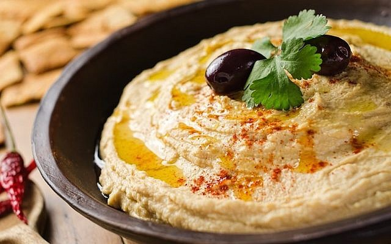

Hummus

The Hummus Among Us
In my years as a cook my favorite dishes to prepare have changed often but the one constant
hit is absolutely Hummus. It is a perfect all season dish that can function as a side dish,
salad topping, or sandwich/wrap protein.
Ingredients
- 1 & 1/2 Cups of Chickpeas
- 1/4 Cup Lemon Juice
- 1 Clove Garlic, peeled and chopped.
- 1 tsp Sea Salt
- 1/2 Cup Tahini
- 1 tsp ground Cumin
- 1 tsp ground Berbere
- 1/4 tsp ground Cayenne
- 1 TBSP Olive Oil
- Half bundle of fresh Parsley, de-stimmed, & Chop
Steps
- Boil Chickpeas until soft to touch.
- Drain Chickpeas set aside to cool with Ice cubes.
- Combine Lemon Juice, Garlic, Salt, & Parsley in food processor.
- Add Tahini, Cumin, Berbere, & Cayenne to food processor & blend.
- Combine Chickpeas and Hummus Mixture in the food processor.
- Add 1/4 to 1/2 Cup Water & blend.
- Add Olive Oil and Cumin while blending until the Hummus reaches a soft and creamy texture.
- Taste test and adjust Salt levels to your preference.
- Enjoy!